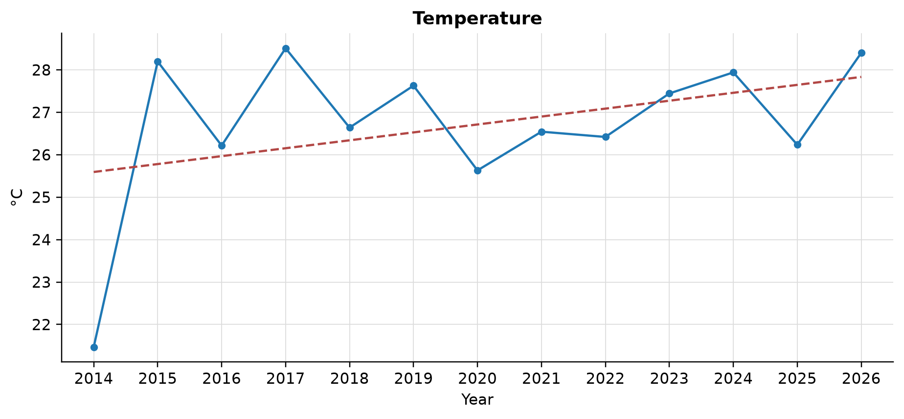
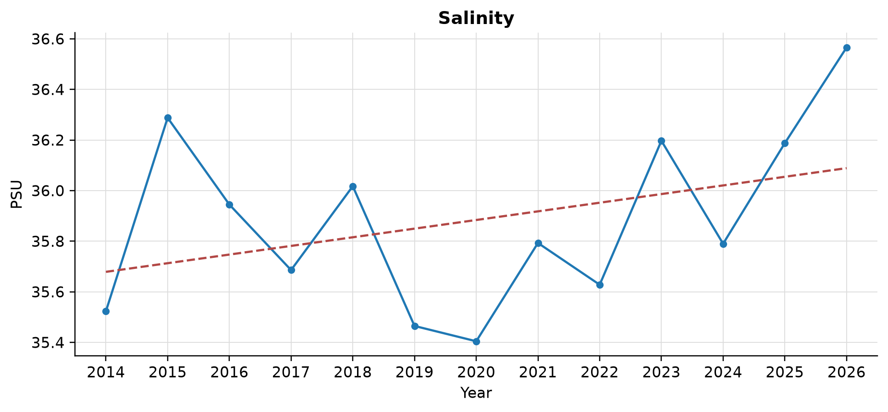
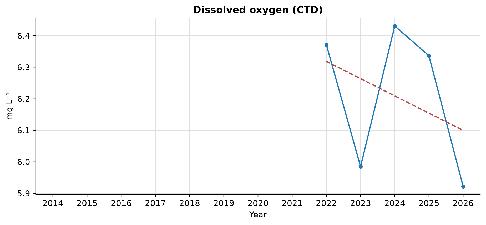
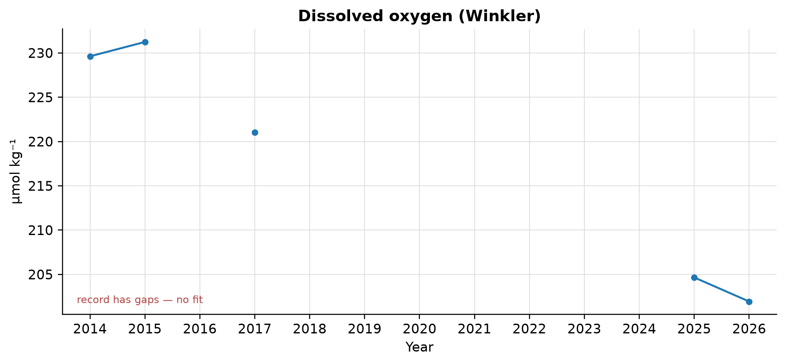
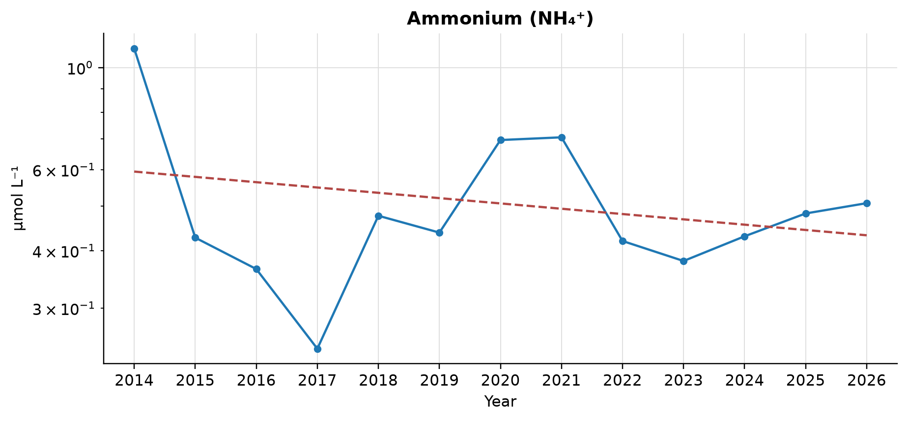
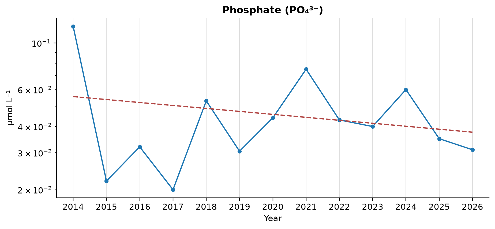
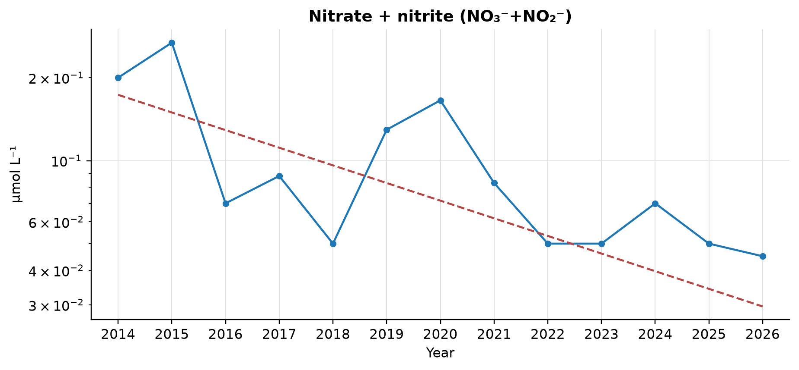
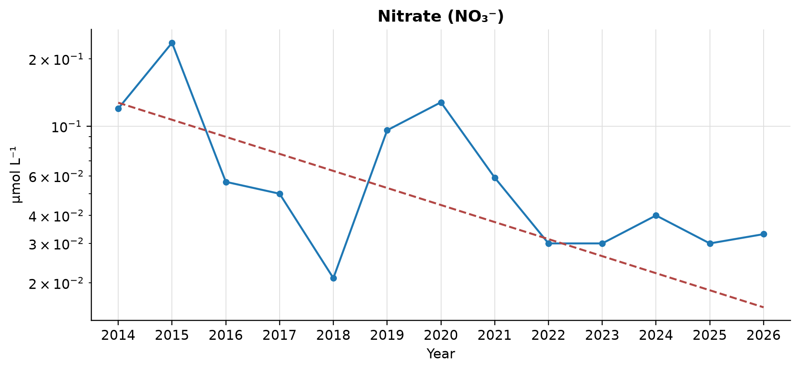
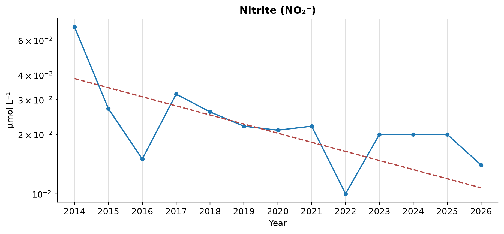
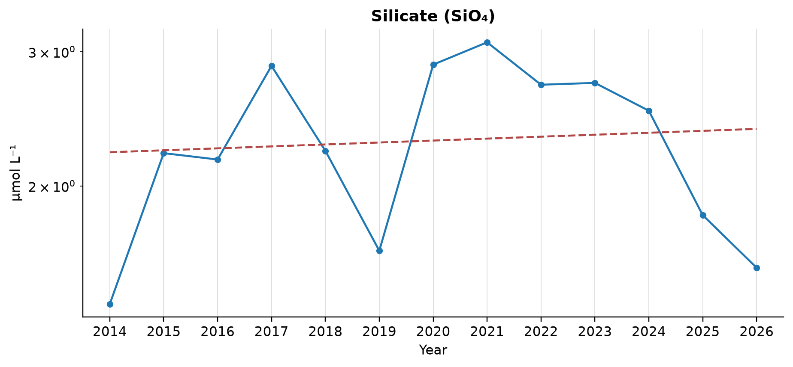
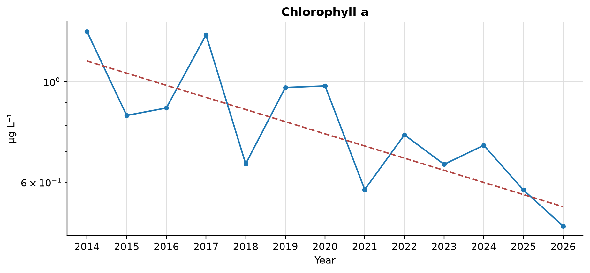
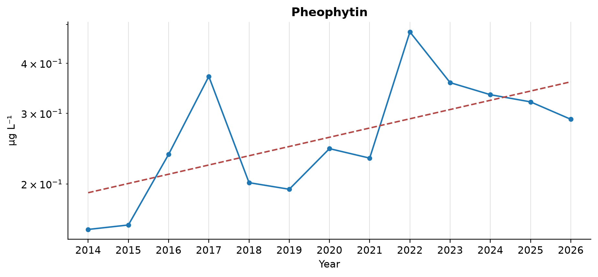
Finally, the report outline asks about longer-term change and discrete events. Here we look at interannual trends in surface waters and then mine the notes field for programmatic flags.












| Change per decade | Units | Years covered | n years | |
|---|---|---|---|---|
| Analyte | ||||
| Temperature | 1.866 | °C | 2014–2026 | 13 |
| Salinity | 0.342 | PSU | 2014–2026 | 13 |
| Dissolved oxygen (CTD) | -0.547 | mg L⁻¹ | 2022–2026 | 5 |
| Dissolved oxygen (Winkler) | — | µmol kg⁻¹ | 2014–2026 | 5 |
| Ammonium (NH₄⁺) | -0.135 | µmol L⁻¹ | 2014–2026 | 13 |
| Phosphate (PO₄³⁻) | -0.015 | µmol L⁻¹ | 2014–2026 | 13 |
| Nitrate + nitrite (NO₃⁻+NO₂⁻) | -0.12 | µmol L⁻¹ | 2014–2026 | 13 |
| Nitrate (NO₃⁻) | -0.093 | µmol L⁻¹ | 2014–2026 | 13 |
| Nitrite (NO₂⁻) | -0.023 | µmol L⁻¹ | 2014–2026 | 13 |
| Silicate (SiO₄) | 0.135 | µmol L⁻¹ | 2014–2026 | 13 |
| Chlorophyll a | -0.484 | µg L⁻¹ | 2014–2026 | 13 |
| Pheophytin | 0.141 | µg L⁻¹ | 2014–2026 | 13 |
These are exploratory linear fits on annual medians of a short (2014–2026) record with a changing spatial footprint — they suggest direction, not significance. Salinity and temperature in particular have both strong seasonal cycles and cruise-to-cruise variation that a simple annual median smooths but does not remove.
Two analytes need extra care. CTD oxygen only spans 2022–2026, so its fit is a five-point line. Winkler oxygen spans just five years in two epochs (2014–2017 and 2025–2026) with a 2018–2024 gap, so its series is drawn with a broken line and no fit is drawn — a straight line through those points would describe the gap, not a trend.
32 distinct annotations were recorded in the notes field.
| Year | Cruise | Note | |
|---|---|---|---|
| 0 | 2015 | WS15264 | New master file: master2 |
| 1 | 2015 | WS15264 | SALINITIES OFF BY >0.1 |
| 2 | 2015 | WS15264 | DIC (W) Bottle 509 taken underway, not at any ... |
| 3 | 2016 | WS16004 | no nuts/chl; discarded |
| 4 | 2016 | WS16130 | Two chl outliers from HAB, stn 32 and 33 |
| 5 | 2017 | WS17030 | Turner C7 Fluorometer went bad, do not use data |
| 6 | 2017 | WS17086 | DIC 19 19I = 14I? |
| 7 | 2025 | WS25024 | CTD too close to surface, some bottles came ou... |
| 8 | 2025 | WS25024 | Added station due to high underway fluoresence... |
| 9 | 2025 | WS25024 | People noted water looked brownish--high KB co... |
| 10 | 2025 | WS25024 | Some modulo errors, sensor data didn't seem to... |
| 11 | 2025 | WS25024 | Modulo error count: 8, sensor dara didn't appe... |
| 12 | 2025 | WS25024 | Too shallow for profile, just fired bottles at... |
| 13 | 2025 | HG25083 | CTD may have bumped bottom, pulled up a bit |
| 14 | 2025 | HG25083 | O2 values different on upcast afte DCM |
| 15 | 2025 | HG25083 | Sampled ~1nm from waypoint |
| 16 | 2025 | HG25083 | swapped SBE43 O2 sensor; serial comms timeout ... |
| 17 | 2025 | HG25083 | shallower than reported depth, tapped bottom a... |
| 18 | 2025 | HG25083 | venting knobs at top of some niskins weren't t... |
| 19 | 2025 | HG25083 | hit bottom at ~9m payout |
| 20 | 2025 | HG25083 | initial depth reading was shallower than actua... |
| 21 | 2025 | HG25083 | possibly misheard depth readout and sampled sh... |
| 22 | 2025 | HG25083 | depth reading jumping around, was conservative... |
| 23 | 2025 | HG25083 | all CTD sensors fluctuating a lot |
| 24 | 2026 | HG26081 | chl and nuts not sampled |
| 25 | 2026 | HG26081 | almost the spot--station called due to low vis... |
| 26 | 2026 | HG26081 | station data not recorded; filled in from UW d... |
| 27 | 2026 | HG26081 | DIC bottom samples collected by accident |
| 28 | 2026 | WB26168 | niskin 1,2 bottom didn't close |
| 29 | 2026 | WB26168 | niskin 7,8 bottom didn't close |
| 30 | 2026 | WB26168 | niskin 5 didn't close, no samples collected |
| 31 | 2026 | WB26168 | niskin 10 leaking |
The annotations capture instrument problems, sampling oddities and bloom-related decisions — useful context when a cruise looks anomalous. Because they are free text, they are worth reviewing before excluding any data.
The annual cycles shown earlier can be separated from the longer-term drift with a classical additive decomposition: a Gaussian-weighted local average (σ ≈ 9 months) gives the trend, the average detrended value for each calendar month gives the seasonal component, and what is left over is the residual. A Gaussian smoother is used rather than a rectangular moving average because a moving average has hard notches at 12, 24, 36 … months — a 24-month window, for example, deliberately excludes ~2-year variability from the trend and dumps it into the residuals, where it masquerades as a spurious harmonic. Each figure below places all three components on a single axis — the trend (red) is drawn as an anomaly from the series mean so that it shares a scale with the seasonal cycle (green), and the residuals (brown) are points joined to the zero line by stems. The implementation lives in sfer_common.seasonal_decompose and sfer_common.decomposition_plot, so no extra dependency (such as statsmodels) is required.
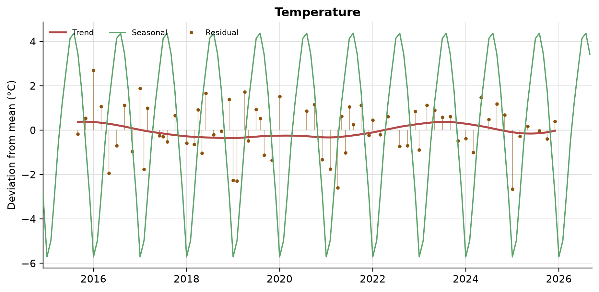
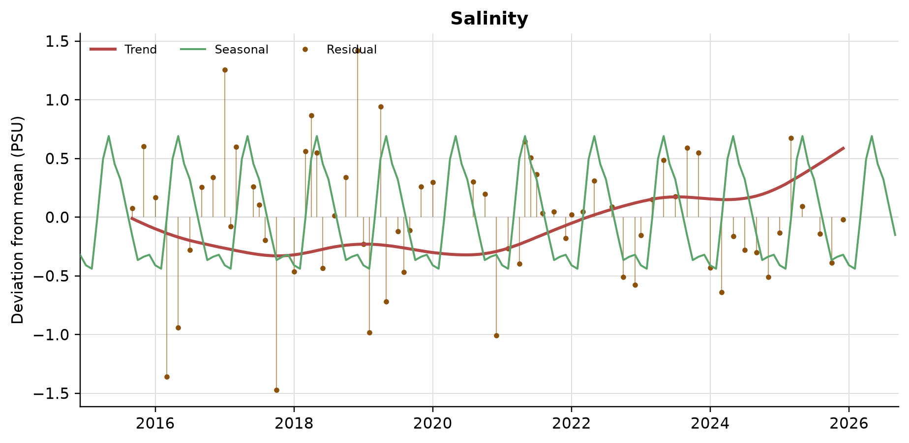
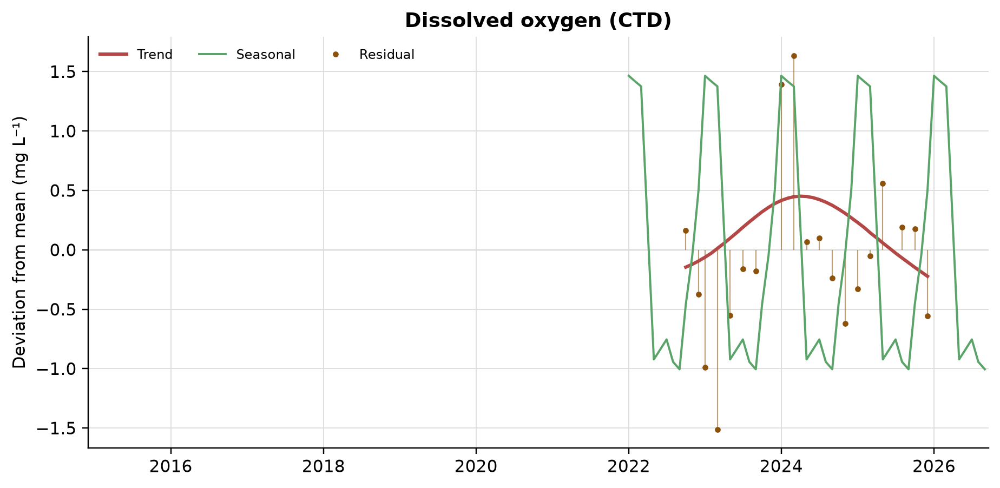
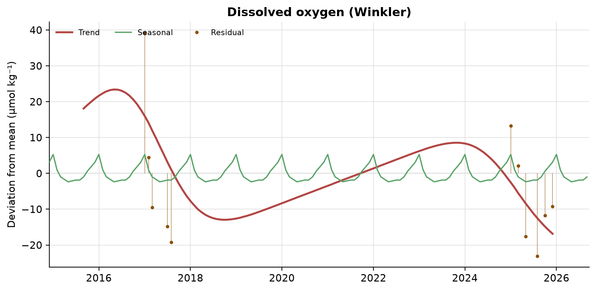
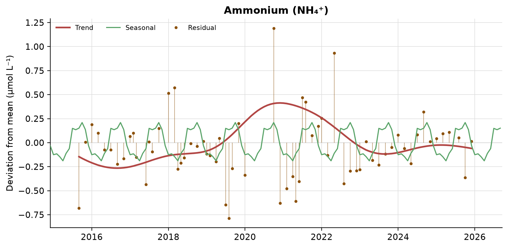
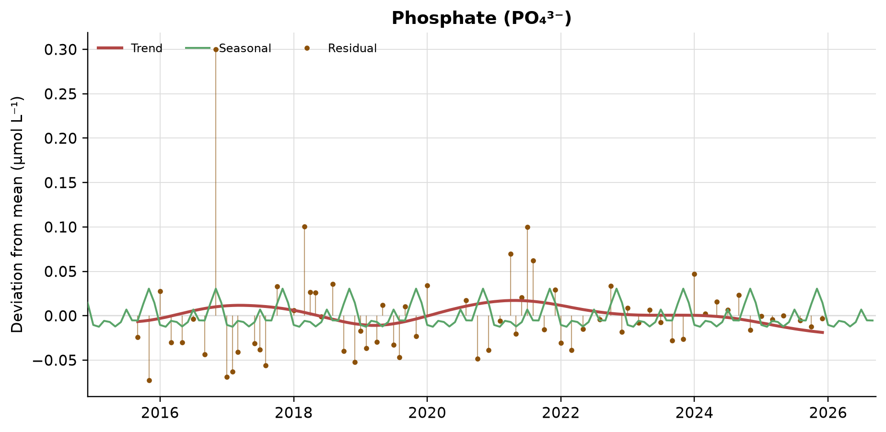
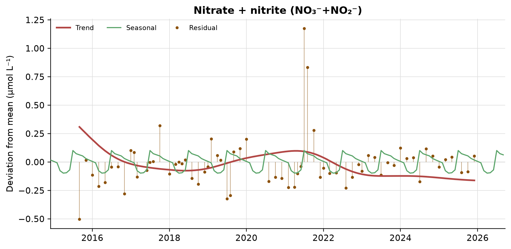
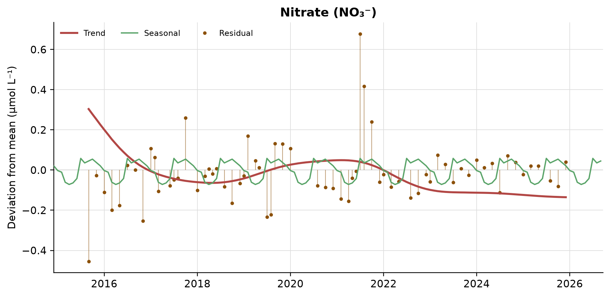
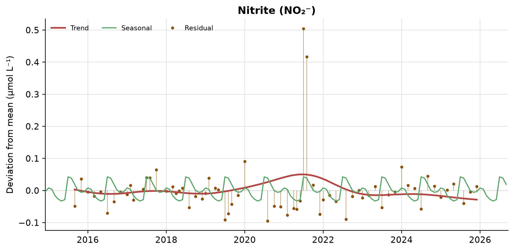
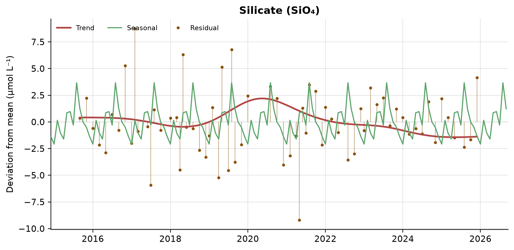
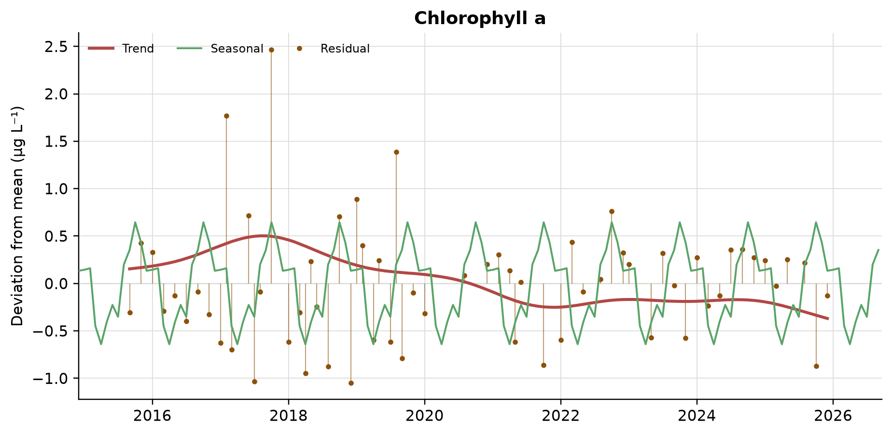
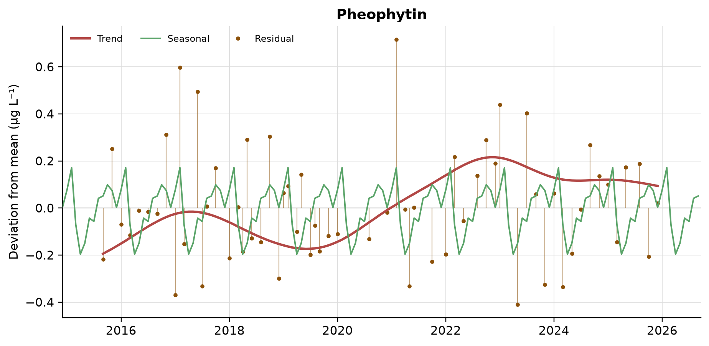
| Seasonal amplitude | Trend / decade | Residual SD | Units | |
|---|---|---|---|---|
| Analyte | ||||
| Temperature | 10.080 | 0.092 | 1.007 | °C |
| Salinity | 1.130 | 0.651 | 0.502 | PSU |
| Dissolved oxygen (CTD) | 2.470 | -0.226 | 0.703 | mg L⁻¹ |
| Dissolved oxygen (Winkler) | 7.630 | -11.592 | 10.703 | µmol kg⁻¹ |
| Ammonium (NH₄⁺) | 0.398 | 0.211 | 0.328 | µmol L⁻¹ |
| Phosphate (PO₄³⁻) | 0.043 | -0.009 | 0.044 | µmol L⁻¹ |
| Nitrate + nitrite (NO₃⁻+NO₂⁻) | 0.199 | -0.217 | 0.193 | µmol L⁻¹ |
| Nitrate (NO₃⁻) | 0.130 | -0.215 | 0.131 | µmol L⁻¹ |
| Nitrite (NO₂⁻) | 0.075 | -0.009 | 0.074 | µmol L⁻¹ |
| Silicate (SiO₄) | 5.745 | -1.623 | 2.697 | µmol L⁻¹ |
| Chlorophyll a | 1.285 | -0.751 | 0.554 | µg L⁻¹ |
| Pheophytin | 0.367 | 0.334 | 0.205 | µg L⁻¹ |
Reading these plots. The trend, seasonal and residual components are additive: together they reproduce the monthly anomaly (the series minus its mean). Residuals are not expected to be white noise — a smooth trend cannot track every interannual wiggle, so the quasi-biennial wiggles visible in some residuals (most clearly salinity and oxygen) are real variability the trend does not follow, not a failure of the seasonal term. Because the cruises are only bi-monthly, roughly 45 % of the calendar months have no sample and are filled by linear interpolation before decomposition; the trend and seasonal curves are drawn across the whole record, but the residuals are plotted only at months with a real observation, so every residual point is a genuine monthly mean. Coverage is much thinner for Winkler oxygen (20 sampled months spread over just five years, with a 2018–2024 gap) and CTD oxygen (29), so those two decompositions are indicative only.
The decomposition above answers how much of each series is seasonal; it does not say what shape that seasonality has. A harmonic (Fourier) model does. It writes the detrended monthly means as a sum of sinusoids,
\[y(t) = \text{trend}(t) + \sum_{k=1}^{3}\big[a_k\cos(2\pi k t/12) + b_k\sin(2\pi k t/12)\big] + \varepsilon_t,\]
and then ranks the harmonics by the share of detrended variance each one explains. The first harmonic (\(k=1\)) is the annual cycle, \(k=2\) the semi-annual cycle and \(k=3\) the four-monthly cycle. The cruises sample roughly every two months, so the Nyquist period is about four months and shorter harmonics would be aliased — they are not fitted. The fit uses only the months with real observations (the trend comes from the Gaussian smoother above), so it is not affected by interpolation. This is where the extra packages the analysis allows earn their keep: the regression is fitted with statsmodels and the spectrum further down uses scipy.
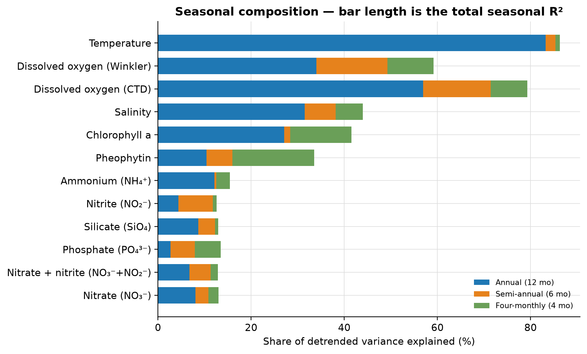
Read left to right, the bars answer the question directly: the annual harmonic is the main component for most analytes, but not all. Oxygen (both sensors) adds a strong semi-annual component, while pheophytin and phosphate are actually led by the four-monthly harmonic. The nutrients as a group have a much weaker seasonal R² (short bars) than the physical analytes. The table ranks the components for every analyte, with the month in which each peaks:
| Seasonal R² | Main | Second | Third | |
|---|---|---|---|---|
| Analyte | ||||
| Temperature | 0.92 | Annual — 83% · peak Jul | Semi-annual — 2% · peak Apr | Four-monthly — 1% · peak Jul |
| Salinity | 0.42 | Annual — 32% · peak May | Semi-annual — 7% · peak May | Four-monthly — 6% · peak Aug |
| Dissolved oxygen (CTD) | 0.69 | Annual — 57% · peak Jan | Semi-annual — 15% · peak Jan | Four-monthly — 8% · peak Jun |
| Dissolved oxygen (Winkler) | 0.80 | Annual — 34% · peak Jan | Semi-annual — 15% · peak Jul | Four-monthly — 10% · peak Jan |
| Ammonium (NH₄⁺) | 0.16 | Annual — 12% · peak Sep | Four-monthly — 3% · peak Feb | Semi-annual — 0% · peak Mar |
| Phosphate (PO₄³⁻) | 0.12 | Four-monthly — 6% · peak Nov | Semi-annual — 5% · peak Nov | Annual — 3% · peak Oct |
| Nitrate + nitrite (NO₃⁻+NO₂⁻) | 0.12 | Annual — 7% · peak Sep | Semi-annual — 5% · peak Jan | Four-monthly — 2% · peak Jun |
| Nitrate (NO₃⁻) | 0.12 | Annual — 8% · peak Sep | Semi-annual — 3% · peak Jul | Four-monthly — 2% · peak Oct |
| Nitrite (NO₂⁻) | 0.13 | Semi-annual — 7% · peak Jul | Annual — 4% · peak Aug | Four-monthly — 1% · peak Feb |
| Silicate (SiO₄) | 0.13 | Annual — 9% · peak Jul | Semi-annual — 4% · peak Aug | Four-monthly — 1% · peak Jan |
| Chlorophyll a | 0.38 | Annual — 27% · peak Oct | Four-monthly — 13% · peak Jan | Semi-annual — 1% · peak Feb |
| Pheophytin | 0.29 | Four-monthly — 18% · peak Jun | Annual — 10% · peak Nov | Semi-annual — 6% · peak Jul |
The figures below show those components over a calendar year: the annual and semi-annual harmonics as separate lines, and their sum (the reconstructed seasonal cycle) in black. A tall annual component that peaks in summer with a small semi-annual term gives the smooth single-peak cycle familiar for temperature; a double-humped shape (as for oxygen) needs the semi-annual term.
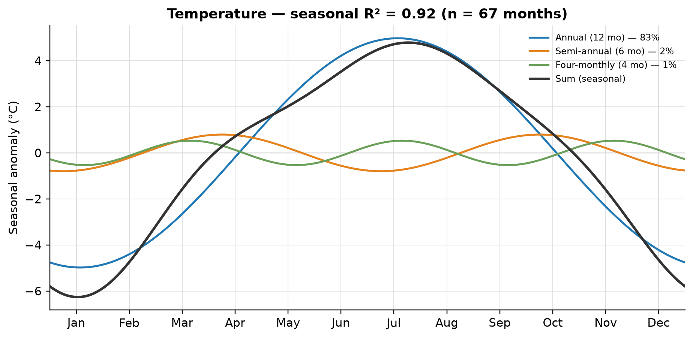
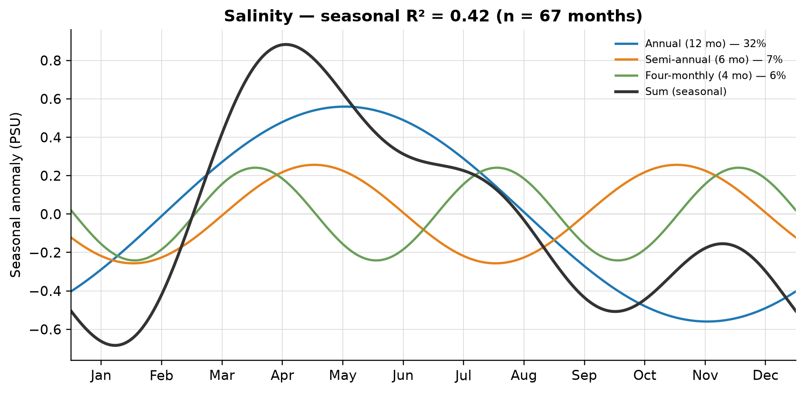
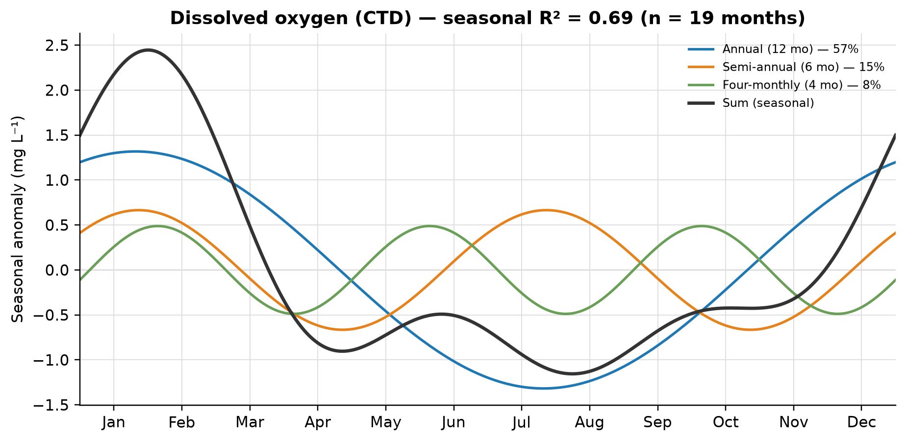
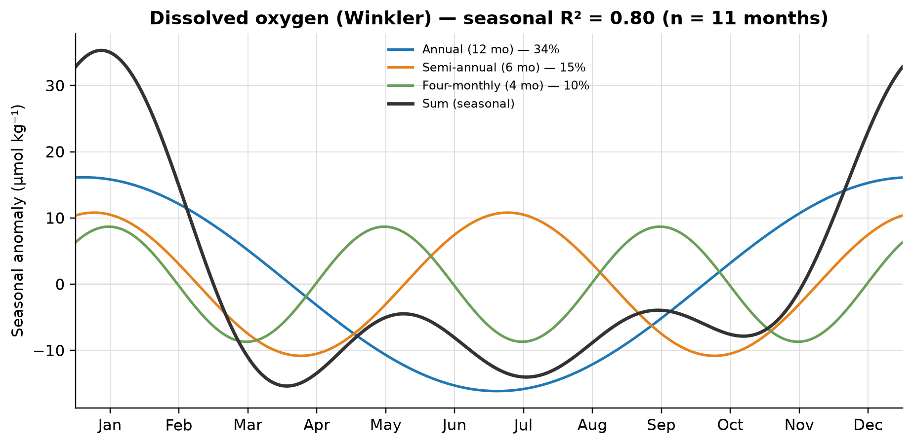
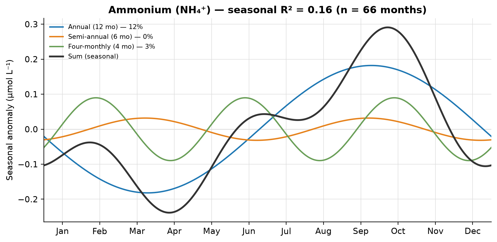
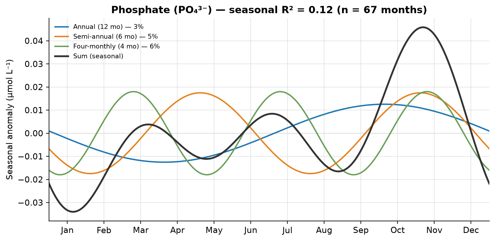
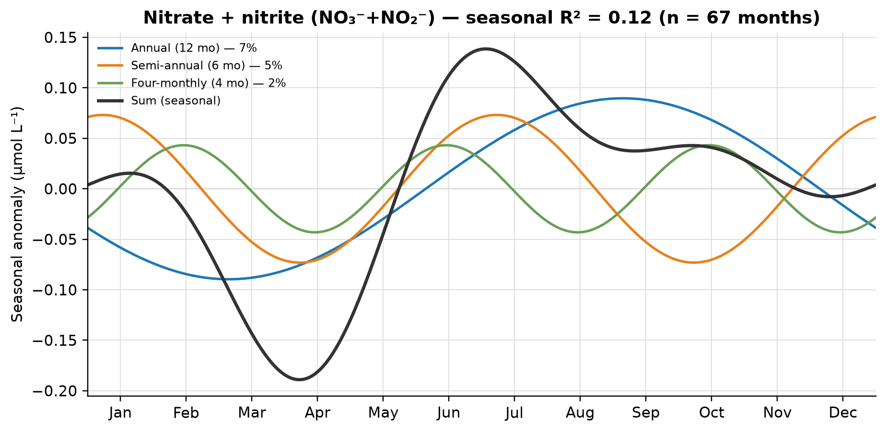
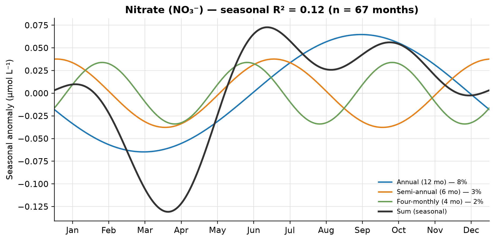
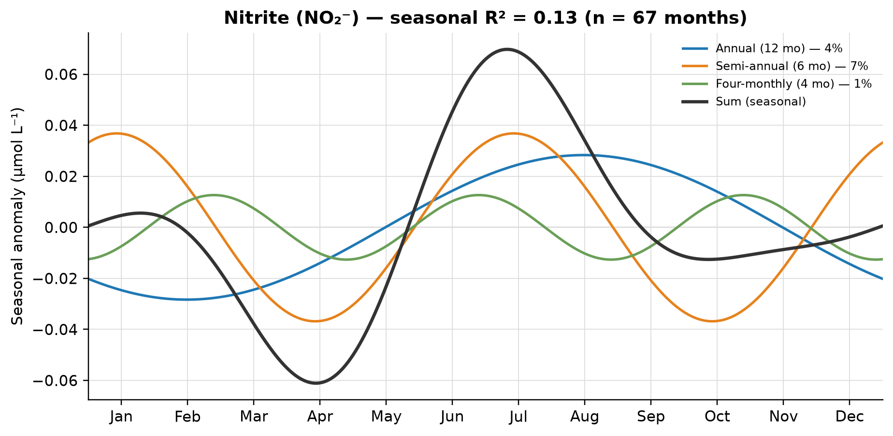
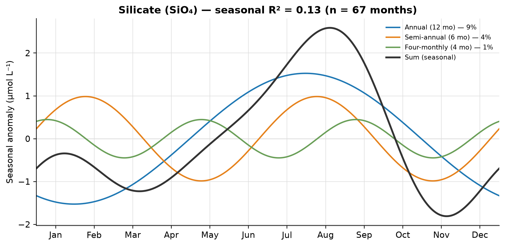
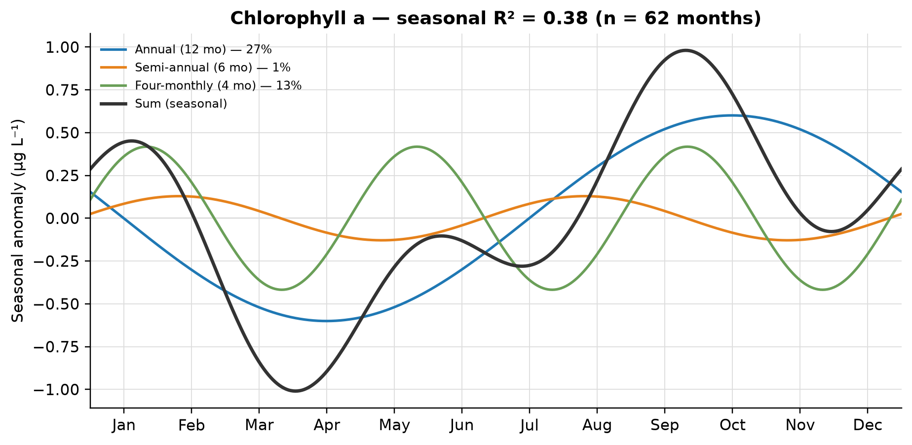
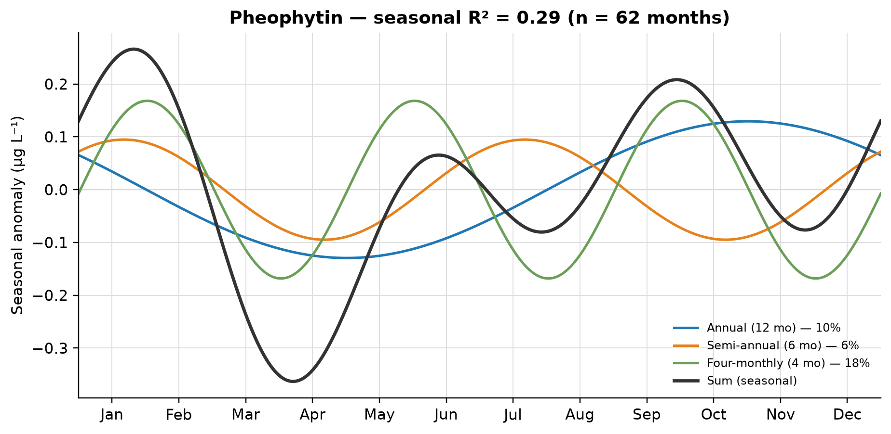
The harmonic model asks how much variance sits at the 12-, 6- and 4-month periods specifically. A Lomb–Scargle periodogram instead scans every period and can be computed on the irregularly spaced observations directly, so it can find cycles the harmonic model is not looking for. The heatmap shows the normalised periodogram for every analyte (brighter = stronger); the dashed lines mark the annual and semi-annual periods.
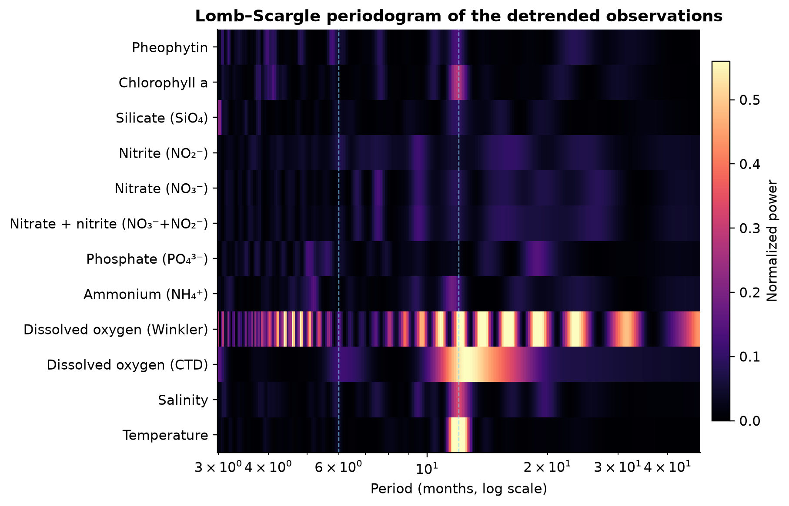
| Top periods (months) | |
|---|---|
| Analyte | |
| Temperature | 12 (0.89), 10.5 (0.05), 3.9 (0.04) |
| Salinity | 12 (0.33), 19.7 (0.11), 9.5 (0.11) |
| Dissolved oxygen (CTD) | 12.6 (0.56), 6.1 (0.12), 3.8 (0.03) |
| Dissolved oxygen (Winkler) | 16 (0.72), 13.8 (0.70), 19 (0.69) |
| Ammonium (NH₄⁺) | 11.6 (0.18), 5.2 (0.15), 9.4 (0.09) |
| Phosphate (PO₄³⁻) | 18.8 (0.14), 5 (0.13), 5.6 (0.10) |
| Nitrate + nitrite (NO₃⁻+NO₂⁻) | 9.5 (0.12), 7.5 (0.12), 15.5 (0.09) |
| Nitrate (NO₃⁻) | 7.5 (0.13), 9.5 (0.11), 26.8 (0.09) |
| Nitrite (NO₂⁻) | 9.5 (0.12), 16.2 (0.10), 6.1 (0.08) |
| Silicate (SiO₄) | 3 (0.23), 11.8 (0.10), 3.8 (0.07) |
| Chlorophyll a | 11.9 (0.28), 4.1 (0.14), 4 (0.10) |
| Pheophytin | 11.8 (0.14), 4 (0.13), 5.8 (0.12) |
What the spectrum adds. Temperature is almost purely annual — a single sharp 12-month peak. Salinity is different: its 12-month peak is joined by a broad ~20-month peak, the quasi-biennial signal that shows up in the decomposition residuals above. CTD oxygen, chlorophyll and ammonium all have a clear annual peak with visible power at six months. The nutrients (nitrate, nitrite, silicate, phosphate) have weak, poorly resolved spectra, consistent with their low seasonal R². Peaks near the four-month Nyquist limit — and anything shorter — should not be trusted, because the bi-monthly cruise schedule cannot resolve them.
Winkler oxygen is a trap. It looks like the most powerful spectrum in the panel, but its observations fall in only two epochs (2017 and 2025) around a 2018–2024 gap, so the periodogram is fitting the step between those two clusters rather than a cycle. Its broad, high power across 12–24 months is not significant (a permutation test gives p ≈ 0.1), and a known 12-month cycle sampled at exactly those times would reach similar power — the window has no resolving power. Read peak sharpness, not raw height: normalised power is not comparable across analytes with different numbers of observations, and a sharp isolated peak (temperature) means something very different from a broad plateau (Winkler).
---
title: "Trends & events"
---
Finally, the report outline asks about longer-term change and discrete
**events**. Here we look at interannual trends in surface waters and then mine
the `notes` field for programmatic flags.
```{python}
#| echo: false
import numpy as np
import pandas as pd
import matplotlib.pyplot as plt
import sfer_common as sfer
sfer.style()
df = sfer.load()
surf = df[df["depth_class"] == "Surface"]
annual = surf.groupby("year")[sfer.ANALYTES].median()
```
## Interannual trends
```{python}
#| echo: false
#| fig-cap:
#| - "Annual surface temperature; the dashed line is a linear fit."
#| - "Annual surface salinity; the dashed line is a linear fit."
#| - "Annual surface CTD oxygen; the dashed line is a linear fit over its short (2022–2026) record."
#| - "Annual surface Winkler oxygen — five years in two epochs (2014–2017 and 2025–2026); the line is broken and no fit is drawn."
#| - "Annual surface ammonium; the dashed line is a linear fit."
#| - "Annual surface phosphate; the dashed line is a linear fit."
#| - "Annual surface nitrate + nitrite; the dashed line is a linear fit."
#| - "Annual surface nitrate; the dashed line is a linear fit."
#| - "Annual surface nitrite; the dashed line is a linear fit."
#| - "Annual surface silicate; the dashed line is a linear fit."
#| - "Annual surface chlorophyll a; the dashed line is a linear fit."
#| - "Annual surface pheophytin; the dashed line is a linear fit."
log_panels = {"nh4", "po4", "no3_no2", "no3", "no2", "si", "chl", "pheo"}
for col in sfer.ANALYTES:
s = annual[col].dropna()
continuous = len(s) >= 3 and bool((np.diff(s.index.astype(int)) <= 1).all())
fig, ax = plt.subplots(figsize=(8.5, 4))
# connect only consecutive years, so a gap in the record shows as a gap
xs, ys = [], []
for i, (x, y) in enumerate(zip(s.index, s.values)):
if i and x - s.index[i - 1] > 1:
xs.append((s.index[i - 1] + x) / 2)
ys.append(np.nan)
xs.append(x)
ys.append(y)
ax.plot(xs, ys, marker="o", color="#1f78b4", ms=4)
if continuous:
slope, intercept = np.polyfit(s.index.astype(float), s.values, 1)
xr = np.array([s.index.min(), s.index.max()])
ax.plot(xr, slope * xr + intercept, "--", color="#b24745", lw=1.5)
else:
ax.text(0.02, 0.04, "record has gaps — no fit", transform=ax.transAxes,
fontsize=8, color="#b24745")
ax.set_title(sfer.label(col))
ax.set_xlabel("Year")
ax.set_ylabel(sfer.units(col))
sfer.time_axis(ax, df, "year")
if col in log_panels and (s > 0).all():
ax.set_yscale("log")
```
```{python}
#| echo: false
rows = []
for col in sfer.ANALYTES:
s = annual[col].dropna()
if len(s) < 3:
continue
continuous = bool((np.diff(s.index.astype(int)) <= 1).all())
slope = np.polyfit(s.index.astype(float), s.values, 1)[0] if continuous else None
rows.append({
"Analyte": sfer.label(col),
"Change per decade": round(slope * 10, 3) if slope is not None else "—",
"Units": sfer.units(col),
"Years covered": f"{int(s.index.min())}–{int(s.index.max())}",
"n years": int(len(s)),
})
pd.DataFrame(rows).set_index("Analyte")
```
::: {.callout-note}
These are **exploratory** linear fits on annual medians of a short (2014–2026)
record with a changing spatial footprint — they suggest direction, not
significance. Salinity and temperature in particular have both strong seasonal
cycles and cruise-to-cruise variation that a simple annual median smooths but
does not remove.
Two analytes need extra care. **CTD oxygen** only spans 2022–2026, so its fit is
a five-point line. **Winkler oxygen** spans just five years in two epochs
(2014–2017 and 2025–2026) with a 2018–2024 gap, so its series is drawn with a
broken line and *no fit is drawn* — a straight line through those points would
describe the gap, not a trend.
:::
## Events noted in the data
```{python}
#| echo: false
from IPython.display import Markdown, display
notes = (df.loc[df["notes"].notna() & (df["notes"].astype(str).str.strip() != ""),
["year", "cruise_id", "notes"]]
.drop_duplicates(subset=["notes"])
.sort_values("year")
.rename(columns={"year": "Year", "cruise_id": "Cruise", "notes": "Note"}))
display(Markdown(f"**{len(notes)} distinct annotations** were recorded in the "
f"`notes` field."))
notes.reset_index(drop=True)
```
The annotations capture instrument problems, sampling oddities and
bloom-related decisions — useful context when a cruise looks anomalous. Because
they are free text, they are worth reviewing before excluding any data.
## Seasonal decomposition
The annual cycles shown earlier can be separated from the longer-term drift with
a classical **additive decomposition**: a Gaussian-weighted local average
(σ ≈ 9 months) gives the **trend**, the average detrended value for each
calendar month gives the **seasonal** component, and what is left over is the
**residual**. A Gaussian smoother is used rather than a rectangular moving
average because a moving average has hard notches at 12, 24, 36 … months — a
24-month window, for example, deliberately excludes ~2-year variability from the
trend and dumps it into the residuals, where it masquerades as a spurious
harmonic. Each figure below places all three components on a single axis — the
trend (red) is drawn as an anomaly from the series mean so that it shares a
scale with the seasonal cycle (green), and the residuals (brown) are points
joined to the zero line by stems. The implementation lives in
`sfer_common.seasonal_decompose` and `sfer_common.decomposition_plot`, so no
extra dependency (such as `statsmodels`) is required.
```{python}
#| echo: false
#| fig-cap:
#| - "Surface temperature — trend, seasonal and residual components."
#| - "Surface salinity — trend, seasonal and residual components."
#| - "Surface CTD dissolved oxygen — trend, seasonal and residual components (sparse coverage; indicative only)."
#| - "Surface Winkler dissolved oxygen — trend, seasonal and residual components (very sparse coverage; indicative only)."
#| - "Surface ammonium — trend, seasonal and residual components."
#| - "Surface phosphate — trend, seasonal and residual components."
#| - "Surface nitrate + nitrite — trend, seasonal and residual components."
#| - "Surface nitrate — trend, seasonal and residual components."
#| - "Surface nitrite — trend, seasonal and residual components."
#| - "Surface silicate — trend, seasonal and residual components."
#| - "Surface chlorophyll a — trend, seasonal and residual components."
#| - "Surface pheophytin — trend, seasonal and residual components."
for col in sfer.ANALYTES:
fig, ax = plt.subplots(figsize=(8.5, 4.2))
sfer.decomposition_plot(df, col, ax, depth_class="Surface")
sfer.time_axis(ax, df)
plt.tight_layout()
```
```{python}
#| echo: false
rows = []
for col in sfer.ANALYTES:
s = sfer.monthly_series(df, col, "Surface")
d = sfer.seasonal_decompose(s)
tr = d["trend"].dropna()
if len(tr) > 2:
x = tr.index.year + (tr.index.dayofyear - 1) / 365.25
slope = np.polyfit(x, tr.to_numpy(), 1)[0] * 10
else:
slope = np.nan
rows.append({
"Analyte": sfer.label(col),
"Seasonal amplitude": round(d["seasonal"].max() - d["seasonal"].min(), 3),
"Trend / decade": round(slope, 3),
"Residual SD": round(d["resid"].std(), 3),
"Units": sfer.units(col),
})
pd.DataFrame(rows).set_index("Analyte")
```
::: {.callout-note}
**Reading these plots.** The trend, seasonal and residual components are
additive: together they reproduce the monthly anomaly (the series minus its
mean). Residuals are *not* expected to be white noise — a smooth trend cannot
track every interannual wiggle, so the quasi-biennial wiggles visible in some
residuals (most clearly salinity and oxygen) are real variability the trend does
not follow, not a failure of the seasonal term. Because the cruises are only
bi-monthly, roughly 45 % of the calendar months have no sample and are filled by
linear interpolation before decomposition; the trend and seasonal curves are
drawn across the whole record, but **the residuals are plotted only at months
with a real observation**, so every residual point is a genuine monthly mean.
Coverage is much thinner for Winkler oxygen (20 sampled months spread over just
five years, with a 2018–2024 gap) and CTD oxygen (29), so those two
decompositions are indicative only.
:::
## A harmonic model of the seasonal cycle
The decomposition above answers *how much* of each series is seasonal; it does
not say *what shape* that seasonality has. A **harmonic (Fourier) model** does.
It writes the detrended monthly means as a sum of sinusoids,
$$y(t) = \text{trend}(t) + \sum_{k=1}^{3}\big[a_k\cos(2\pi k t/12) + b_k\sin(2\pi k t/12)\big] + \varepsilon_t,$$
and then ranks the harmonics by the share of detrended variance each one
explains. The first harmonic ($k=1$) is the **annual** cycle, $k=2$ the
**semi-annual** cycle and $k=3$ the **four-monthly** cycle. The cruises sample
roughly every two months, so the Nyquist period is about four months and shorter
harmonics would be aliased — they are not fitted. The fit uses only the months
with real observations (the trend comes from the Gaussian smoother above), so it
is not affected by interpolation. This is where the extra packages the analysis
allows earn their keep: the regression is fitted with `statsmodels` and the
spectrum further down uses `scipy`.
```{python}
#| echo: false
#| fig-cap: "Harmonic make-up of each analyte's seasonal signal. Bar length is the total seasonal R² (the share of detrended variance explained by the three harmonics together); the segments split it between the annual, semi-annual and four-monthly components."
fig, ax = plt.subplots(figsize=(8.5, 5.2))
sfer.harmonic_composition_plot(df, sfer.ANALYTES, ax)
plt.tight_layout()
```
Read left to right, the bars answer the question directly: the **annual**
harmonic is the main component for most analytes, but not all. Oxygen (both
sensors) adds a strong **semi-annual** component, while **pheophytin** and
**phosphate** are actually led by the four-monthly harmonic. The nutrients as a
group have a much weaker seasonal R² (short bars) than the physical analytes.
The table ranks the components for every analyte, with the month in which each
peaks:
```{python}
#| echo: false
names = {1: "Annual", 2: "Semi-annual", 3: "Four-monthly"}
rows = []
for col in sfer.ANALYTES:
table, info = sfer.harmonic_fit(df, col)
t = (table.rename(columns={"Share of variance": "share", "Period (mo)": "period",
"Peak month": "peak"})
.sort_values("share", ascending=False))
comp = [f"{names[int(r.harmonic)]} — {r.share * 100:.0f}% · peak {r.peak}"
for r in t.itertuples()]
rows.append({"Analyte": sfer.label(col),
"Seasonal R²": round(info["seasonal_r2"], 2),
"Main": comp[0], "Second": comp[1], "Third": comp[2]})
pd.DataFrame(rows).set_index("Analyte")
```
The figures below show those components over a calendar year: the annual and
semi-annual harmonics as separate lines, and their sum (the reconstructed
seasonal cycle) in black. A tall annual component that peaks in summer with a
small semi-annual term gives the smooth single-peak cycle familiar for
temperature; a double-humped shape (as for oxygen) needs the semi-annual term.
```{python}
#| echo: false
#| fig-cap:
#| - "Temperature — harmonic components of the seasonal cycle."
#| - "Salinity — harmonic components of the seasonal cycle."
#| - "CTD dissolved oxygen — harmonic components of the seasonal cycle (sparse coverage)."
#| - "Winkler dissolved oxygen — harmonic components of the seasonal cycle (very sparse coverage)."
#| - "Ammonium — harmonic components of the seasonal cycle."
#| - "Phosphate — harmonic components of the seasonal cycle."
#| - "Nitrate + nitrite — harmonic components of the seasonal cycle."
#| - "Nitrate — harmonic components of the seasonal cycle."
#| - "Nitrite — harmonic components of the seasonal cycle."
#| - "Silicate — harmonic components of the seasonal cycle."
#| - "Chlorophyll a — harmonic components of the seasonal cycle."
#| - "Pheophytin — harmonic components of the seasonal cycle."
for col in sfer.ANALYTES:
fig, ax = plt.subplots(figsize=(8.5, 4.2))
sfer.harmonic_plot(df, col, ax)
plt.tight_layout()
```
### The spectrum behind the cycle
The harmonic model asks how much variance sits at the 12-, 6- and 4-month
periods specifically. A **Lomb–Scargle periodogram** instead scans every period
and can be computed on the irregularly spaced observations directly, so it can
find cycles the harmonic model is not looking for. The heatmap shows the
normalised periodogram for every analyte (brighter = stronger); the dashed lines
mark the annual and semi-annual periods.
```{python}
#| echo: false
#| fig-cap: "Lomb–Scargle periodogram of the detrended surface observations, one row per analyte. Dashed lines mark the 12-month (annual) and 6-month (semi-annual) periods."
fig, ax = plt.subplots(figsize=(8.5, 5.4))
sfer.periodogram_heatmap(df, sfer.ANALYTES, ax)
plt.tight_layout()
```
```{python}
#| echo: false
rows = []
for col in sfer.ANALYTES:
peaks = sfer.lomb_scargle_peaks(df, col)
rows.append({"Analyte": sfer.label(col),
"Top periods (months)": ", ".join(f"{p:g} ({q:.2f})" for p, q in peaks)})
pd.DataFrame(rows).set_index("Analyte")
```
::: {.callout-note}
**What the spectrum adds.** Temperature is almost purely annual — a single sharp
12-month peak. Salinity is different: its 12-month peak is joined by a broad
**~20-month** peak, the quasi-biennial signal that shows up in the decomposition
residuals above. CTD oxygen, chlorophyll and ammonium all have a clear annual
peak with visible power at six months. The nutrients (nitrate, nitrite,
silicate, phosphate) have weak, poorly resolved spectra, consistent with their
low seasonal R². Peaks near the four-month Nyquist limit — and anything shorter —
should not be trusted, because the bi-monthly cruise schedule cannot resolve
them.
**Winkler oxygen is a trap.** It looks like the most powerful spectrum in the
panel, but its observations fall in only two epochs (2017 and 2025) around a
2018–2024 gap, so the periodogram is fitting the *step* between those two
clusters rather than a cycle. Its broad, high power across 12–24 months is not
significant (a permutation test gives p ≈ 0.1), and a *known* 12-month cycle
sampled at exactly those times would reach similar power — the window has no
resolving power. Read peak *sharpness*, not raw height: normalised power is not
comparable across analytes with different numbers of observations, and a sharp
isolated peak (temperature) means something very different from a broad plateau
(Winkler).
:::